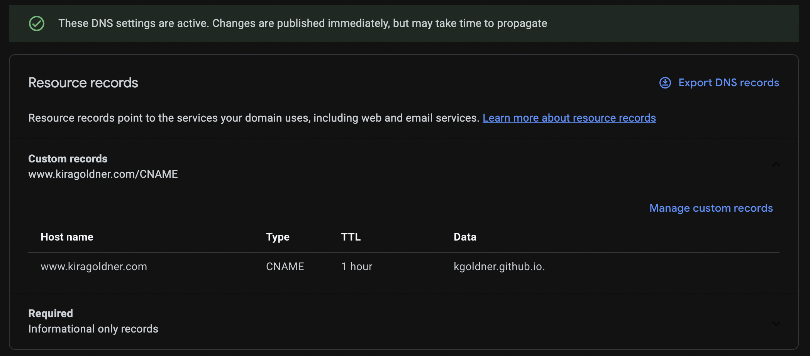

Blog home »
Every Academic Needs a Website
July 26, 2022
As I wrote in a twitter thread last week: "If you're an academic without a website, you don't exist. Doesn't matter if you haven't published yet, put up a website with your name, affiliation, EMAIL, advisor, research interests, and photo. Otherwise you can't be found." Today, I'll elaborate.
It's been a few months so I'll say it again: If you're an academic without a website, you don't exist.
— Kira Goldner (@kiragoldner) July 17, 2022
Doesn't matter if you haven't published yet, put up a website with your name, affiliation, EMAIL, advisor, research interests, and photo. Otherwise you can't be found.
You can use google sites, or wordpress, or I have some basic minimal html templates here (https://t.co/qTn8dgM5Ub) that anyone can use, there's no excuse. But I can't find you after I've met you, or follow-up with an email, if you don't have a website.
— Kira Goldner (@kiragoldner) July 17, 2022
This twitter thread was spurred by my attendance of my primary conference, EC, and after having countless incredible conversations with researchers I hadn't met before all week at EC, I then tried to find them online to follow-up—about potential collaborations, questions about our conversations, possible visits, etc—and for a very large number of them, I couldn't find them. Many of them were junior students who perhaps didn't want to make a website yet with only 0-2 papers published, but how was I supposed to contact them? Some I didn't even know their last name, and they weren't googleable from their research and first name, nor linked on advisor or university websites. On the other hand, some were, and those are the people who I'll proceed talking with, giving opportunities to, thinking highly of, etc.Are you a faculty member thinking, "duh, I know this, I have a website." Well, question--do all your students have websites? If not, go bug them please, because they effectively don't exist.
— Kira Goldner (@kiragoldner) July 17, 2022
A similar thing happened back a few months ago—I was organizing a workshop and we invited the participants to suggest collaborators and students to join too. Many suggested junior colleagues or students by name and affiliation, and I couldn't find those people's emails in order to invite them. Of course, I responded back asking for the emails, but I almost felt like if they couldn't establish themselves as individuals on the internet with a research area and email address, then why should they be invited to a workshop?
This is why I feel so strongly that everyone should have a website, even if they have no publications yet! It's essentially your virtual name badge, so that people can find you, be reminded who you are, can contact you, can connect you to your affiliation and advisor(s), and can see what you list your research interests as. Of course, if you have preprints, or publications, or talks to link, or whatever else, it's only more important.
Another argument for a website was mentioned to me by Jon Ullman. Many people seem to avoid having a website due to feeling insecure, like they haven't "made-it" yet, or like having a website is something arrogant and self-promoting. However, telling people about yourself and your work is a necessary skill in academia; it's something that will be asked of you every time you meet new people. So, "modesty and humility are great, but there is nothing immodest about stating facts about yourself on a website," and this is a good chance to practice the skill of telling people about you.
Anyway, ranting aside, here's some guidance on how to make a website.
No Mark-Up
There exist websites that show the pages to you in "what-you-see-is-what-you-get" (WYSIWYG) so you don't have to bother with mark-up languages, a la Microsoft Word, although usually you can still toggle into the mark-up languages if you'd like. These are generally user-friendly and fairly self-explanatory although limited, and there are a handful of free ones. I do not believe that you can integrate them into your own domain (without possibly paying a lot).Some options for "what-you-see-is-what-you-get":
Using Mark-Up
If you're working from the basic mark-up languages like html and css, a website is just a collection of files that are marked up with style (think LaTeX) and link to one another. Starting from templates, of which plenty exist, all you have to do is replace the text part and leave the style/markup alone until you feel ready to play with it, and then take the collection of files and find somewhere to host it.You can easily find templates online (by googling) to start from. However, one thing to remember is that web design is non-trivial work; please never just take the code from someone's website without asking!
I built the following templates for a variety of academic uses, and I offer with my permission for anyone to use (with credit, already embedded):
- Single page site: good for a personal webpage or a simple reading group [ demo | download ]
- Multi-page site: good for a personal webpage with a lot of information, a seminar, etc. [ demo | download ]
- Conference site: good for a conference, workshop, seminar; has multiple pages; header always visible [ demo | download ]
- Course site: good for running a class [ demo | download ]
Some options for basic html:
- Website from your affiliation
- Github pages
- Own domain
If you do wind up moving where you host your website, a super handy trick is a redirect. In your old html file (probably index.html in the old folder) you just save the following code and nothing else:
‹meta http-equiv="refresh" content="0; URL='http://www.ThisIsMyNewUrl.com/IfSomeExtension.html'" /›
For those who can push and pull on git (don't even have to understand branching!), Github pages walks you through just about everything in terms of set up, and from then on, updating and "saving" your website is just via regular git commands.
You would wind up with a url like kgoldner.github.io If you want to be fancy, you can buy your own domain name. For example, when I became a postdoc, I bought "www.kiragoldner.com" through Google Domains for $12 per year. This website is actually just using my google domain name to host the github page. Github pages walks through connecting the two, but you essentially reroute the github page to be located at the google domain through the DNS page on google domains.

And to respond to those of you asking "why NOT LinkedIn or Google Scholar or DBLP?"
(If you don't know what these are, I'll link to my own LinkedIn, Google Scholar, and DBLP to provide examples.)
My answer is: I think that faculty/senior researchers set the norm. None of these systems are adequate for researchers who need to distribute information about students advised, courses taught with links to course schedules/syllabi/lectures notes/videos, links to talks given, etc, in addition to publications (which these systems can list). So a more in-depth website is necessary to contain this information, making that the norm in academia. This means it's not the norm for us to use LinkedIn, and the structure of LinkedIn only makes sense if everyone is using it, ruling this out immediately. As for Google Scholar and DBLP, while they can both contain publication lists and co-authors, and possibly a small photo and a few research key words, they can't handle an actual paragraph about your research interests, or pointers to your advisor etc, and require extra click-throughs to find your (possibly outdated) email (scholar/dblp → publication → possibly another click to pdf → email). Websites are just the best platform for the information we want displayed and can grow to accommodate the extra information you'll want to share as your academic career grows. (Note: I do still think it's beneficial to have and even link to Google Scholar and DBLP.)
In conclusion:
P.S. Did the information in this post feel accessible? Perhaps because I linked to websites throughout! They're so useful!